Convert portable OSL data to a Risoe.BINfileData object
Source:R/PSL2Risoe.BINfileData.R
PSL2Risoe.BINfileData.RdConverts an RLum.Analysis object produced by the function read_PSL2R() to
a Risoe.BINfileData object (BETA).
Arguments
- object
RLum.Analysis (required):
RLum.Analysisobject produced by read_PSL2R- ...
currently not used.
Value
Returns an S4 Risoe.BINfileData object that can be used to write a BIN file using write_R2BIN.
Details
This function converts an RLum.Analysis object that was produced
by the read_PSL2R function to a Risoe.BINfileData.
The Risoe.BINfileData can be used to write a Risoe BIN file via
write_R2BIN.
Examples
# (1) load and plot example data set
data("ExampleData.portableOSL", envir = environment())
plot_RLum(ExampleData.portableOSL)
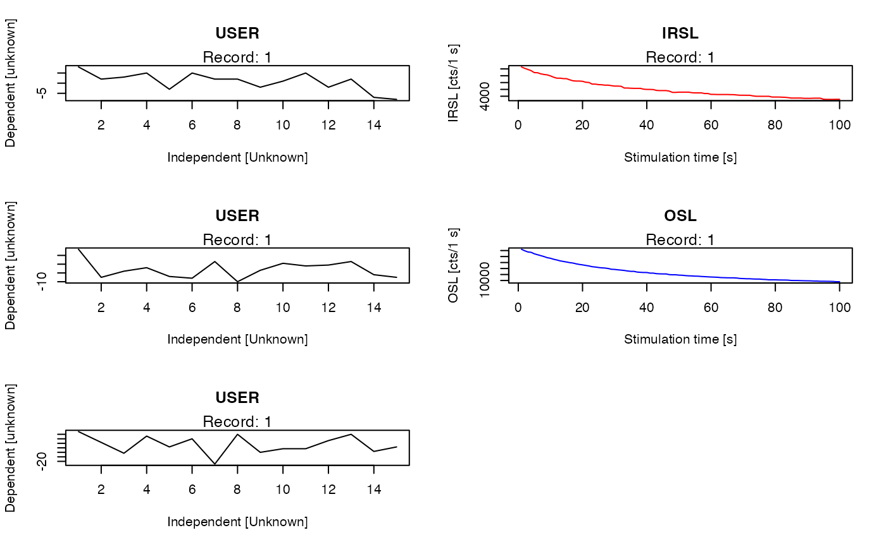
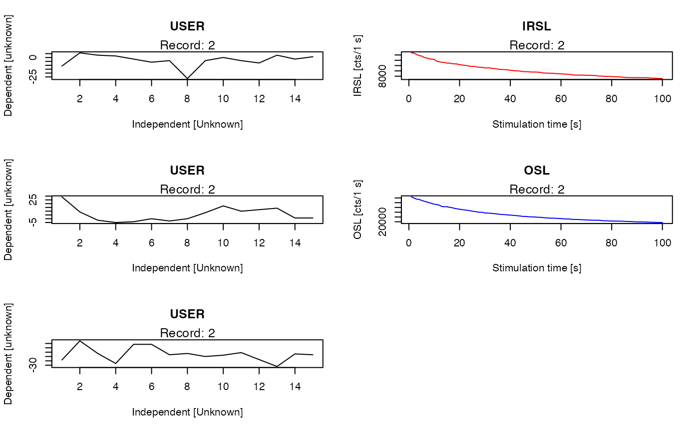
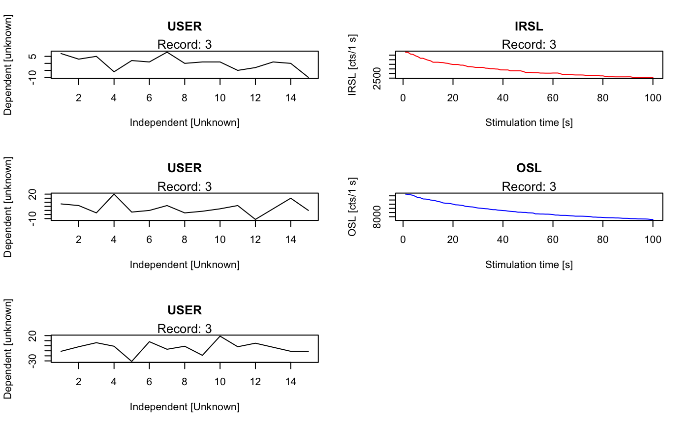
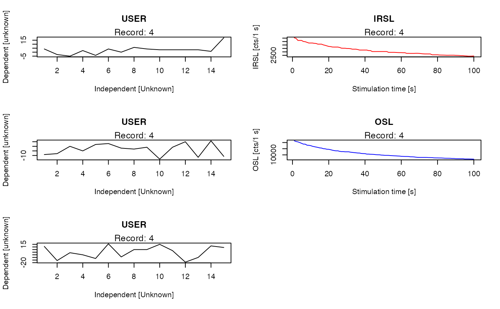
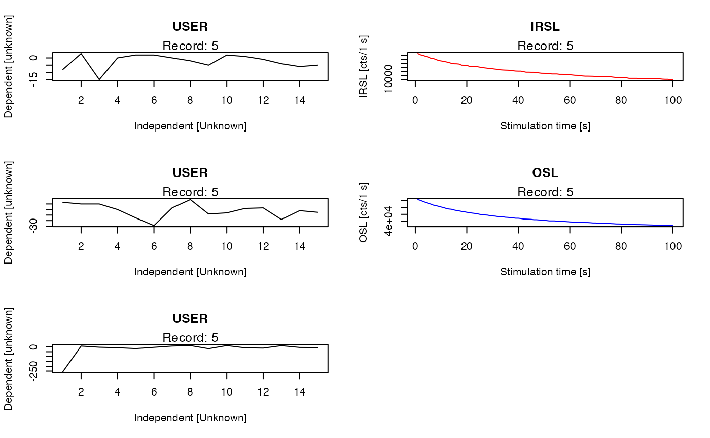
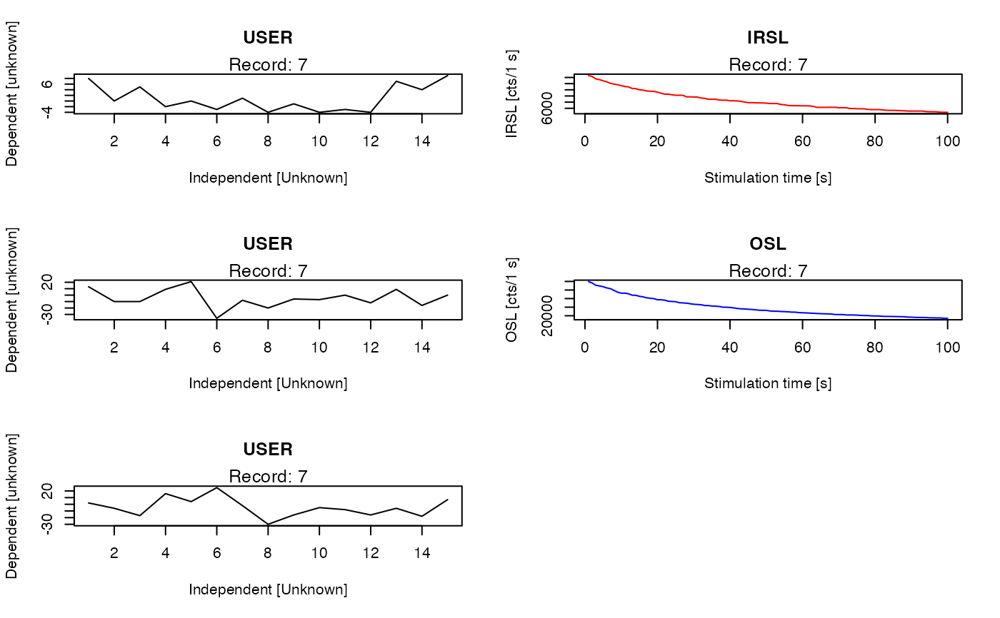
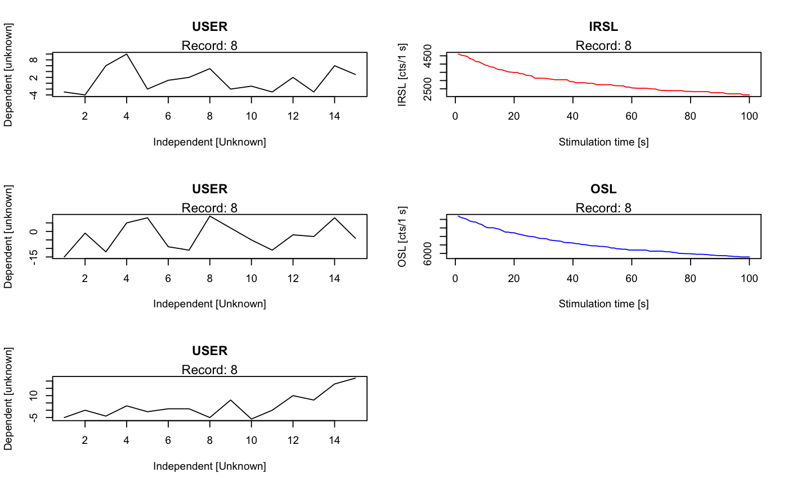
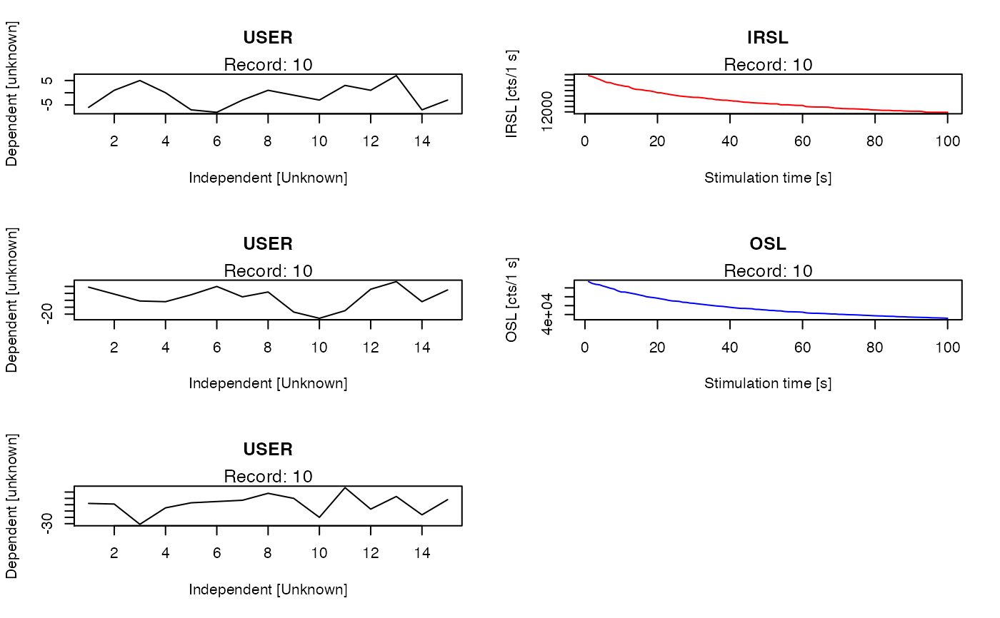
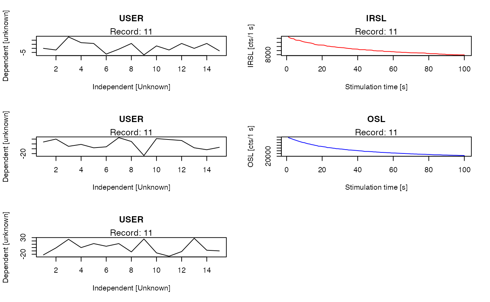
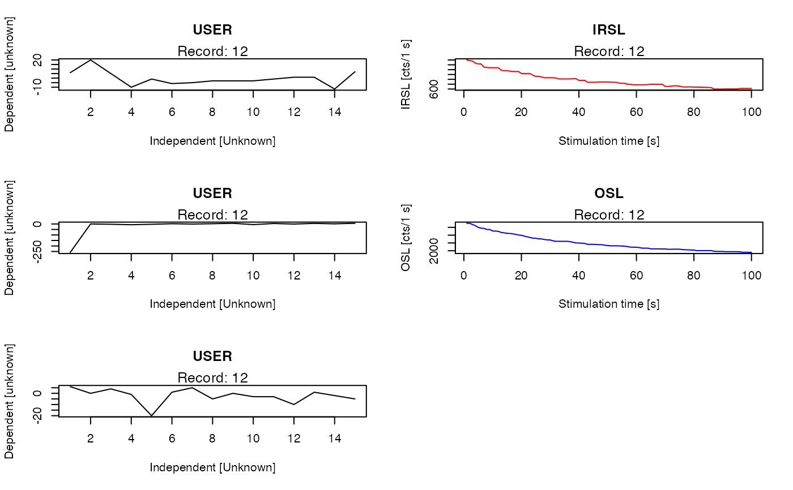
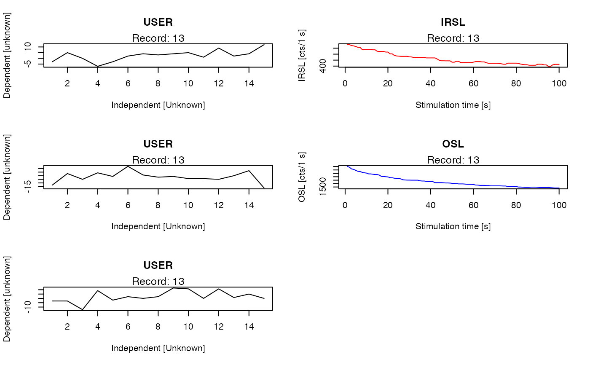
 # (2) merge all RLum.Analysis objects into one
merged <- merge_RLum(ExampleData.portableOSL)
merged
#>
#> [RLum.Analysis-class]
#> originator: merge_RLum.Analysis()
#> protocol: portable OSL
#> additional info elements: 196
#> number of records: 70
#> .. : RLum.Data.Curve : 70
#> .. .. : #1 USER | #2 IRSL | #3 USER | #4 OSL | #5 USER | #6 USER | #7 IRSL
#> .. .. : #8 USER | #9 OSL | #10 USER | #11 USER | #12 IRSL | #13 USER | #14 OSL
#> .. .. : #15 USER | #16 USER | #17 IRSL | #18 USER | #19 OSL | #20 USER | #21 USER
#> .. .. : #22 IRSL | #23 USER | #24 OSL | #25 USER | #26 USER | #27 IRSL | #28 USER
#> .. .. : #29 OSL | #30 USER | #31 USER | #32 IRSL | #33 USER | #34 OSL | #35 USER
#> .. .. : #36 USER | #37 IRSL | #38 USER | #39 OSL | #40 USER | #41 USER | #42 IRSL
#> .. .. : #43 USER | #44 OSL | #45 USER | #46 USER | #47 IRSL | #48 USER | #49 OSL
#> .. .. : #50 USER | #51 USER | #52 IRSL | #53 USER | #54 OSL | #55 USER | #56 USER
#> .. .. : #57 IRSL | #58 USER | #59 OSL | #60 USER | #61 USER | #62 IRSL | #63 USER
#> .. .. : #64 OSL | #65 USER | #66 USER | #67 IRSL | #68 USER | #69 OSL | #70 USER
# (3) convert to RisoeBINfile object
bin <- PSL2Risoe.BINfileData(merged)
bin
#>
#> [Risoe.BINfileData object]
#>
#> BIN/BINX version: 7
#> File name: Praktikum2016
#> Object date: 190516
#> User: RLum
#> System ID: 0 (unknown)
#> Overall records: 70
#> Records type: IRSL (n = 14)
#> OSL (n = 14)
#> USER (n = 42)
#> Position range: 1 : 1
#> Run range: 1 : 70
# (4) write Risoe BIN file
if (FALSE) { # \dontrun{
write_R2BIN(bin, "~/portableOSL.binx")
} # }
# (2) merge all RLum.Analysis objects into one
merged <- merge_RLum(ExampleData.portableOSL)
merged
#>
#> [RLum.Analysis-class]
#> originator: merge_RLum.Analysis()
#> protocol: portable OSL
#> additional info elements: 196
#> number of records: 70
#> .. : RLum.Data.Curve : 70
#> .. .. : #1 USER | #2 IRSL | #3 USER | #4 OSL | #5 USER | #6 USER | #7 IRSL
#> .. .. : #8 USER | #9 OSL | #10 USER | #11 USER | #12 IRSL | #13 USER | #14 OSL
#> .. .. : #15 USER | #16 USER | #17 IRSL | #18 USER | #19 OSL | #20 USER | #21 USER
#> .. .. : #22 IRSL | #23 USER | #24 OSL | #25 USER | #26 USER | #27 IRSL | #28 USER
#> .. .. : #29 OSL | #30 USER | #31 USER | #32 IRSL | #33 USER | #34 OSL | #35 USER
#> .. .. : #36 USER | #37 IRSL | #38 USER | #39 OSL | #40 USER | #41 USER | #42 IRSL
#> .. .. : #43 USER | #44 OSL | #45 USER | #46 USER | #47 IRSL | #48 USER | #49 OSL
#> .. .. : #50 USER | #51 USER | #52 IRSL | #53 USER | #54 OSL | #55 USER | #56 USER
#> .. .. : #57 IRSL | #58 USER | #59 OSL | #60 USER | #61 USER | #62 IRSL | #63 USER
#> .. .. : #64 OSL | #65 USER | #66 USER | #67 IRSL | #68 USER | #69 OSL | #70 USER
# (3) convert to RisoeBINfile object
bin <- PSL2Risoe.BINfileData(merged)
bin
#>
#> [Risoe.BINfileData object]
#>
#> BIN/BINX version: 7
#> File name: Praktikum2016
#> Object date: 190516
#> User: RLum
#> System ID: 0 (unknown)
#> Overall records: 70
#> Records type: IRSL (n = 14)
#> OSL (n = 14)
#> USER (n = 42)
#> Position range: 1 : 1
#> Run range: 1 : 70
# (4) write Risoe BIN file
if (FALSE) { # \dontrun{
write_R2BIN(bin, "~/portableOSL.binx")
} # }